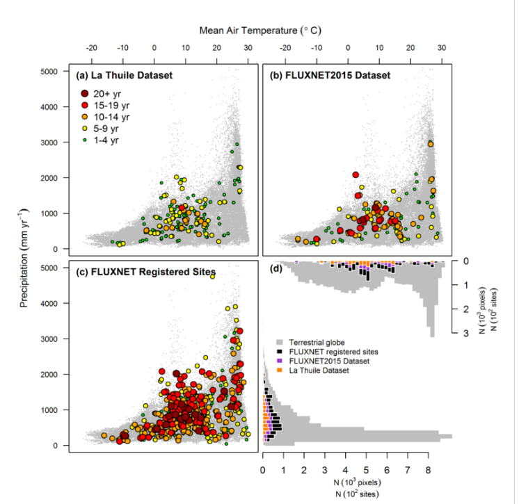

Home / About / About KoFlux
KoFlux measures the exchange of carbon, water and energy between terrestrial ecosystems and the atmosphere, and shares the resulting records in a standard format.
KoFlux was launched in January 2002 at the Second International Workshop on Advanced Flux Network and Flux Evaluation, held on Jeju Island. The Korean flux community reorganized its scattered towers into a single regional network so that observations could be compared, combined and shared.
The network operates as the Korean branch of AsiaFlux, which is itself the Asian arm of FLUXNET. Membership means our sites use comparable instrumentation, comparable processing, and comparable file formats, so a record from a Korean rice paddy can sit alongside one from a Japanese forest without translation.
An eddy covariance tower samples wind and gas concentration many times per second above a canopy, then computes the net vertical transport of CO₂, water vapour and heat over each half hour. It is the only method that captures these fluxes continuously at ecosystem scale, without disturbing the surface it observes.
Towers are expensive to build and to keep running, so their number stays small and every year of record is valuable. That is the reason this portal exists: pooling the records makes regional synthesis possible in a way no single site can.
KoFlux maintains a documented processing protocol covering coordinate rotation, frequency response correction, stationarity testing, u* filtering, gap filling and flux partitioning. Because every site runs the same chain, differences between records reflect the ecosystems rather than the software.

The integrated dataset published here covers 21 sites and 83 site-years collected between 2011 and 2024, spanning croplands, coniferous, deciduous, mixed and evergreen broadleaf forests, and a wetland reservoir.
The wider network of networks that KoFlux exchanges data and standards with.
See the networks → SitesHow sites are documented and which ones appear in the current dataset.
Read the summary → DataVariables, quality flags, file format and citation.
See the data notes →